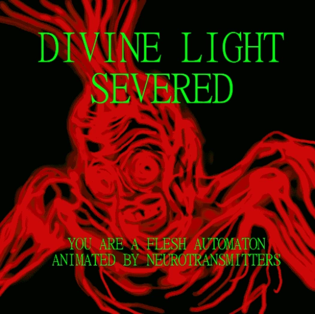
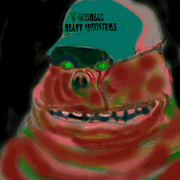
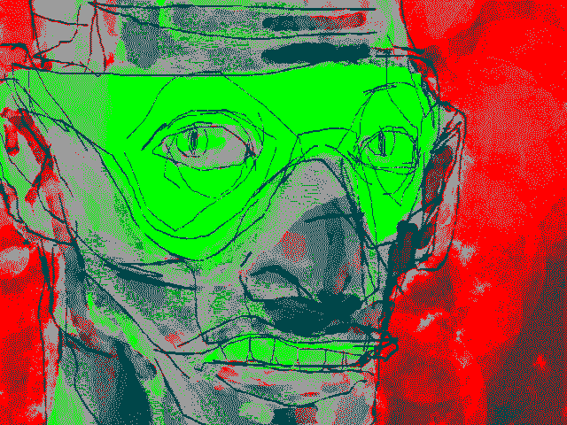
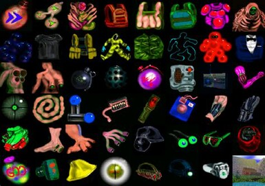
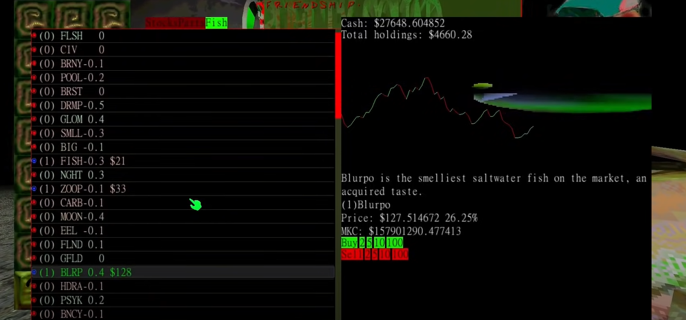
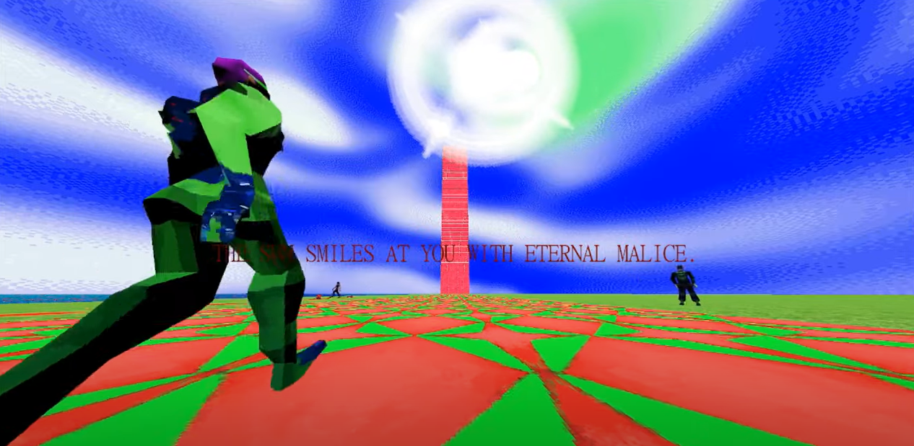
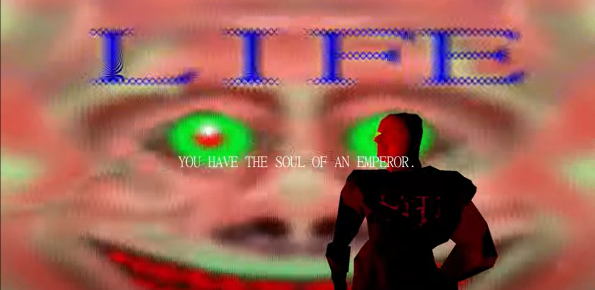
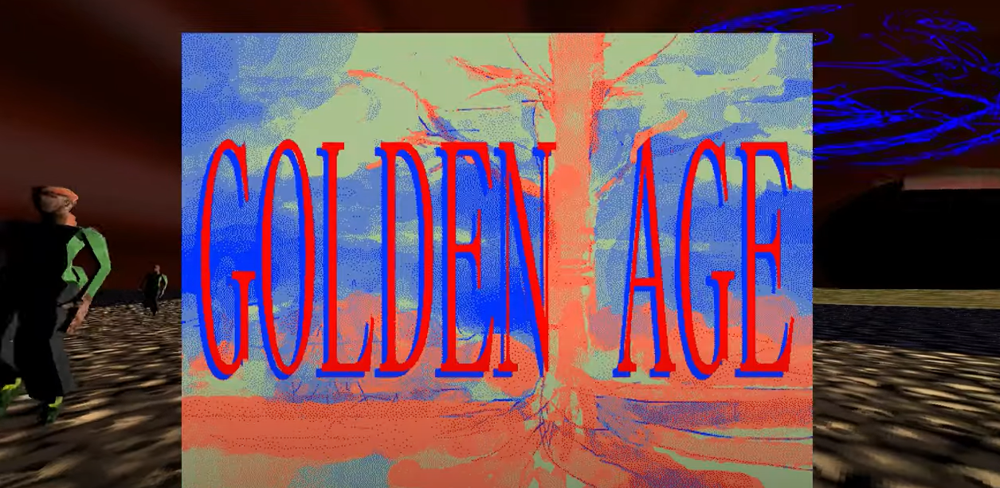

DIVINE LIGHT SEPERATED. HOW IT FEELS TO LOSE SOPHIA'S TOUCH

"The living organism, in a situation determined by the play of energy on the surface of the globe, ordinarily recieves more energy than is necessary for maintaining life; the excess energy (wealth) can be used for the growth of a system (e.g., an organism); if the system can no longer grow, or if the excess cannot be completely absorbed in its growth, it must necessarily be lost without profit; it must be spent, willingly or not, gloriously or catastrophically" -Georges Bataille
CRUELTY SQUAD is a video game developped by finnish thing "Ville Kallio" and was released
on JUNE 16 2021. It is a game about killing, fishing and staying on the CEO grindset, all set
on the backdrop of a skullfucked artstyle.

Be introduced to the world of CRUELTY SQUAD. In the world of CRUELTY SQUAD,
mankind has far outgrown its own limits. Mankind no longer has needs in this
brave new world, just a bottomless want. Death has been made a thing of the
past and an excess of life overflows through every orifice of existance. Mankind
has gone beyond mad and morality is thrown to hell. Beauty and Repulsiveness blend
into one as colors never meant to be seen flash before your eyes as the caucaphony
of life deafeans you. Companies have become the law, violence a new norm, the human
body a limitation and the stock market itself has become akin to a god worshipped by bio slave and corporate archon alike.
Life itself has a negative value and death and its absence serves to remind you of this. Embrace the ceo grindset or die and be reborn miserable, bitch.

In the story of CRUELTY SQUAD, you play as the titular character
M.T. Fuck, who after being discharged from his role in the SEC Death unit, is in a rather low market value mood. His state of mild misery is then interrupted by his mysterious and obese handler who after calling him a worthless low life loser,
offers him a job in the CRUELTY SQUAD as a cold blooded and drug filled grunt. He accepts the offer, and M.T. Fuck's journey into becoming the CEO ALPHA HUSTLER he was destined to be
FEEL PEACE AND OBLIVION IN CONFLICT. CATHARSIS IN KILLING

The gameplay of cruelty squad is rather simple: prepare your preferred liquidation tools and bio augmentations
then use your brain to strategize and kill the targets. But there are many more layers than that. Cruelty Squad is both a
fast paced power fantasy made to appeal to the primal likings of man towards mindless violence and a slow methodical tactical shooter made to train
you into adapting a CEO mindset. In cruelty squad, you can play as a silent and efficient killer, not even being seen by the
target until it is too late and they are (temporarily) liquidated, and as a guns blazing and bloodthirsty emotionless killer, causing as much blood shed as possible just to see how far you can go.
You can enjoy what remains of nature as you fish away your worries (and also sell those fish in the stock market) or defile the carcasses of your victims by harvesting their insides and trading them off for profit.
Invest in the stock market and become a property owner, then use those investments in the market to power your SKS transactional rifle and erase anyone that stands in your way. The world is your prison, do as you will.
ASCENSION THROUGH CONQUERING AND CAPITAL. CLIMBING THE CORPORATE SYSTEM

Money. Earning it is the secondary objective in cruelty squad. How do you earn money? Do your job, sell organs, sell fish, invest in the stock market and manipulate it to your whims.
Earning money through your liquidations are your main source of income, but selling your victims organs on the market can earn you some side capital. But thats amatuer shit, start fishing and grinding for those six figure fish and start using the ever changing and volatile stock market for increasing your total net worth.
But what is the reason for this much money? simple, because you want newer and better things. From the ability to become partially invisible for the cost of smelling like a sceptic tank to using your
appendix as a graplling hook, the free market has your every want. With enough money, you can also become an independent and succesful entreprenuer with their own property to their name.

"The first of the Triagons was born of malice. It grasped the flow of the solar terror with both hands, and perched on top of this doomed world. The germ is born."
"It looked up into the sun. Beyond the veil of power. It extended its bulging vascular arms through the boundary and took its share. The disease spreads."
"It assumed total control of the biological shape of things. It became primal engine of technological progress. And so everything started to twist and turn, pulsate and pump. The infection is final."
But as the missions go on and on you may find yourself in a place never ment to be seen by lower net worth individuals. But now that you have (assumedly) become a high net worth individual, it will become clearer what the powers above you really are.
Due to your now high ammounts of capital, you are able to finally ascend above the noise of the eternal cycle of the snake eating its tail and being made new again. Enter the archon grid and blow ABRAXAS's heads off with your sheer fucking fire power and make death absolutely disappear. The sun smiles at you with malice, taste monotony of life eternal.

"When the second Triagon descended from the newly emerging mass of Life, the world was mired in confusion and chaos. The overwhelming clutter of biology got on its nerves, it demanded calm. The feeding begins."
"It saw visions of guts, of decay and metabolism. The opportunity had come to extend a cavern of intestines deep into the ground. To start processing the glut of excess organic mass. To introduce limits to writhing and shitting. Chlorhydric acid."
"Existence became a scarce product, and the nervebags came to detest the limits. Suffering was born. The second Triagon was content with its power. It was happy. Metabolic domination."
In order to gain access to more special areas you may find yourself selling your soul and eradicating your hope. Do not worry, your transaction was not in vain. Look back in the Cruelty squad HQ, a new door awaits for you to enter. Fight its target and get the transactional rifle. And then after all of that, meet LIFE behind a door. You have the soul of an emperor, continue to fight against the cycle.

"The third Triagon was born of Death. It saw that the world was radiating excess energy. It wanted to put great things into motion. But greatness wasn't possible without value. The first transaction."
"It took its blade and cut a large hole into the boundary, creating a sudden flash of high volume transactional power. And just for a moment things seeped value into themselves, assuming souls. The second transaction."
"The hole was quickly mended, and the overpowering transmission of value was cut short. But in that moment the seed of primordial financial might was planted, and the world took on its transactional form. Conflict and discord emerged, and the third Triagon was ecstatic. The third transaction."
And in a final test of your sheer superiority and absolute skill over the rest, ascend and descend through the trauma loop, finally getting to the bottom of it all. Fight against ever increasing challenges and difficulties without any of your enhancements, only your skills. And in the end of it all, ascend through all the meaningless noise and make the cycle collapse in on itself. A golden age begins where the last one ended, peel away the layers of the onion slowly.